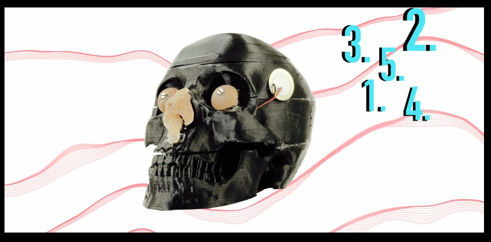

New Media Artist
Unsere Kultur hat uns beigebracht unsere Sinne getrennt voneinander wahrzunehmen oder in von der Technologie künstlich vorgegebenen Paaren (Fernsehen, Monitor: Audio und Visuelles). Dabei ist es uns eigentlich gar nicht möglich, unsere Sinne einzeln wahrzunehmen. Zwar kann unser Projekt nicht alle Sinne miteinander verknüpfen, wir möchten aber zumindest ein neues Paar schaffen: Sehen und Tasten. Der Interagierende soll eine ganz neue Synästhesie-Erfahrung machen können. Synästhesie ist die Verknüpfung von zwei oder mehr Wahrnehmungsformen. Wir entwickeln ein interaktives Objekt, das mit Sensoren ausgestattet ist und durch Anfassen und Bewegung Signale an einen Computer sendet und in Echtzeit ein emotionales und abstraktes Bild (in der Art von Jackson Pollock) erzeugt. Dieses Bild wird beeinflusst durch Geschwindigkeit der Bewegung und Art der Berührungen, also durch die Emotionen und Kreativität des Benutzers. Zur Umsetzung planen wir, ein kugelartiges Objekt, das durch unterschiedliche Oberflächenstruktur den Tastsinn anregen soll, mit verschieden Sensoren auszustatten. Diese verbinden wir dann mit einem Arduino. Dessen Signale verarbeiten wir dann mit Processing, indem wir einen Algorithmus ausarbeiten, der aus den Sensorsignalen Formen und Farben auf einer weißen Leinwand erzeugt. Als Arbeitstitel wählen wir „Synesthesia“, weil es schwer auszusprechen ist.

synesthesie
2018
synesthesie
2018